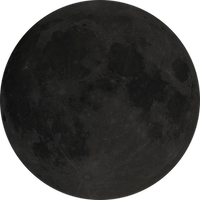
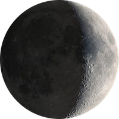
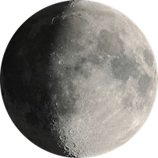
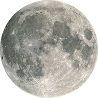
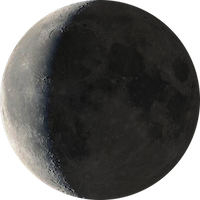

Understanding Moon Phases
Explanation of Lunar Phases
Before we describe the phases of the Moon,
let’s describe what they’re not. Some people mistakenly believe the
phases come from Earth’s shadow cast on the Moon. Others think that
the Moon changes shape due to clouds. These are common misconceptions,
but they’re not true. Instead, the Moon’s phase depends only on its
position relative to Earth and the Sun.
TheMoon doesn’t make its own light, it just
reflects the Sun’s light as all the planets do. The Sun always
illuminates one half of the Moon. Since the Moon is tidally locked, we
always see the same side from Earth, but there’s no permanent “dark
side of the Moon.” The Sun lights up different sides of the Moon as it
orbits around Earth — it’s the fraction of the Moon from which we see
reflected sunlight that determines the lunar phase. The lunar phase or
phase of the Moon is the shape of the directly sunlit portion of the
Moon as viewed from Earth.
Thelunar phases gradually change over the
period of a synodic month (about 29.53 days), as the orbital positions
of the Moon around Earth and of Earth around the Sun shift. The Moon's
rotation is tidally locked by Earth's gravity; therefore, most of the
same lunar side always faces Earth. This near side is variously
sunlit, depending on the position of the Moon in its orbit. Thus, the
sunlit portion of this face can vary from 0% (at new moon) to 100% (at
full moon). The lunar terminator is the boundary between the
illuminated and darkened hemispheres. Each of the four "intermediate"
lunar phases is around 7.4 days, but this varies slightly due to the
elliptical shape of the Moon's orbit. Aside from some craters near the
lunar poles, such as Shoemaker, all parts of the Moon see around 14.77
days of daylight, followed by 14.77 days of "night". The side of the
Moon facing away from Earth is sometimes called the "dark side of the
Moon", although that is a misnomer.
Moon Phase Diagram
As shown in this diagram, the New Moon
occurs when the moon is positioned between the earth and sun. The
three objects are in approximate alignment. The entire illuminated
portion of the moon is on the back side of the moon, the half that we
cannot see.
At a Full Moon, the earth, moon, and sun are
in approximate alignment, just as the new moon, but the moon is on the
opposite side of the earth, so the entire sunlit part of the moon is
facing us. The shadowed portion is entirely hidden from view.
The First Quarter and Last Quarter (aso
called Third Quarter) moons (both often called a "half moon"), happen
when the moon is at a 90 degree angle with respect to the earth and
sun. So we are seeing exactly half of the moon illuminated and half in
shadow.
Once you understand those four key moon
phases, the phases between should be fairly easy to visualize, as the
illuminated portion gradually transitions between them. An easy way to
remember and understand those "between" lunar phase names is by
breaking out and defining 4 words: crescent, gibbous, waxing, and
waning. The word crescent refers to the phases where the moon is less
than half illuminated. The word gibbous refers to phases where the
moon is more than half illuminated. Waxing essentially means "growing"
or expanding in illumination, and waning means "shrinking" or
decreasing in illumination.
Thus you can simply combine the two words to
create the phase name, as follows: After the new moon, the sunlit
portion is increasing, but less than half, so it is waxing crescent.
After the first quarter, the sunlit portion is still increasing, but
now it is more than half, so it is waxing gibbous. After the full moon
(maximum illumination), the light continually decreases. So the waning
gibbous phase occurs next. Following the third quarter is the waning
crescent, which wanes until the light is completely gone a new moon.
| Phase Name | Cycle in Days | Illumination | Actual Picture |
|---|---|---|---|
| New Moon | 0 Days | 0% |  |
| Waxing Crescent | 0-7 Days | 1 - 49% |  |
| First Quarter | 7 Days | 50% |

|
| Waxing Gibbous | 8 - 14 Days | 51 - 99% |  |
| Full Moon | 14.5 Days | 100% |  |
| Waning Gibbous | 15 - 20 Days | 51 - 99% |

|
| Last Quarter | 21 Days | 50% |

|
| Waning Crescent | 22-29 Days | 1 - 49% |  |
Lunar Perigee and Apogee
The Moon's orbit around Earth is elliptical,
with one side closer to Earth than the other. As a result, the
distance between the Moon and Earth varies throughout the month and
the year. On average, the distance is about 382,900 kilometers
(238,000 miles) from the Moon's center to the center of Earth. The
point on the Moon's orbit closest to Earth is called the perigee and
the point farthest away is the apogee.
The Moon's phase and the date of its
approach to its perigee or apogee are not synced. When a Full Moon or
New Moon occurs close to the Moon's perigee, it is known as a
Supermoon. On the other hand, when a Full Moon or New Moon occurs
close to the Moon's apogee, it is known as a Micromoon. The Moon
passes through the 2 extreme points–or apsides–perigee and apogee
about once a month.
The time it takes for the Moon to travel
from perigee to perigee, is called the anomalistic month, and takes
around 27.55455 days. This is not to be confused with the synodic
month, which lasts a little longer, and is the time it takes the Moon
to orbit once around Earth, from New Moon through all the Moon phases
to the next New Moon. The Supermoon on November 14, 2016, was the
closest a Full Moon has been to Earth since January 26, 1948. The next
time a Full Moon is even closer to Earth will be on November 25, 2034
(dates based on UTC time). How can Full Moon be in the daytime?
Moonrise is the best time to view the Moon, weather permitting, of
course. At this time, illusion mixes with reality to make a
low-hanging Moon that looks unnaturally large when compared to
foreground objects.
Orientation by Latitude
In the Northern Hemisphere, if the left
(east) side of the Moon is dark, then the bright part is thickening,
and the Moon is described as waxing (shifting toward full moon). If
the right (west) side of the Moon is dark, then the bright part is
thinning, and the Moon is described as waning (past full and shifting
toward new moon). Assuming that the viewer is in the Northern
Hemisphere, the right side of the Moon is the part that is always
waxing. (That is, if the right side is dark, the Moon is becoming
darker; if the right side is lit, the Moon is getting brighter.)
In the Southern Hemisphere, the Moon is
observed from a perspective inverted, or rotated 180°, to that of the
Northern and to all of the images in this article, so that the
opposite sides appear to wax or wane. Closer to the Equator, the lunar
terminator will appear horizontal during the morning and evening.
Since the above descriptions of the lunar phases only apply at middle
or high latitudes, observers moving towards the tropics from northern
or southern latitudes will see the Moon rotated anti-clockwise or
clockwise with respect to the images in this article.
The lunar crescent can open upward or
downward, with the "horns" of the crescent pointing up or down,
respectively. When the Sun appears above the Moon in the sky, the
crescent opens downward; when the Moon is above the Sun, the crescent
opens upward. The crescent Moon is most clearly and brightly visible
when the Sun is below the horizon, which implies that the Moon must be
above the Sun, and the crescent must open upward. This is therefore
the orientation in which the crescent Moon is most often seen from the
tropics. The waxing and waning crescents look very similar. The waxing
crescent appears in the western sky in the evening, and the waning
crescent in the eastern sky in the morning.
Blue Moon
 The term "Blue Moon" has traditionally, in
the Maine Farmer's Almanac, referred to an "extra" full moon, where a
year which normally has 12 full moons has 13 instead. The "blue moon"
reference is applied to the third full moon in a season with four full
moons, thus correcting the timing of the last month of a season that
would have otherwise been expected too early. This happens every two
to three years (seven times in the Metonic cycle of 19 years). The
March 1946 issue of Sky & Telescope misinterpreted the traditional
definition, which led to the modern colloquial misunderstanding that a
blue moon is a second full moon in a single solar calendar month with
no seasonal link.
The term "Blue Moon" has traditionally, in
the Maine Farmer's Almanac, referred to an "extra" full moon, where a
year which normally has 12 full moons has 13 instead. The "blue moon"
reference is applied to the third full moon in a season with four full
moons, thus correcting the timing of the last month of a season that
would have otherwise been expected too early. This happens every two
to three years (seven times in the Metonic cycle of 19 years). The
March 1946 issue of Sky & Telescope misinterpreted the traditional
definition, which led to the modern colloquial misunderstanding that a
blue moon is a second full moon in a single solar calendar month with
no seasonal link.
Owing to the rarity of a blue moon, the term
"blue moon" is used colloquially to mean a rare event, as in the
phrase "once in a blue moon". One lunation (an average lunar cycle) is
29.53 days. There are about 365.24 days in a tropical year. Therefore,
about 12.37 lunations (365.24 days divided by 29.53 days) occur in a
tropical year. In the widely used Gregorian calendar, there are 12
months (the word month is derived from moon) in a year, and normally
there is one full moon each month. Each calendar year contains roughly
11 days more than the number of days in 12 lunar cycles. The extra
days accumulate, so every two or three years (seven times in the
19-year Metonic cycle), there is an extra full moon. The extra full
moon necessarily falls in one of the four seasons, giving that season
four full moons instead of the usual three, and, hence, a blue moon.
The frequency of a blue moon can be
calculated as follows. It is the period of time it would take for an
extra synodic orbit of the moon to occur in a year. Given that a year
is approximately 365.2425 days and a synodic orbit is 29.5309 days,
then there are about 12.368 synodic months in a year. For this to add
up to another full month would take 1/0.368 years. Thus it would take
about 2.716 years, or 2 years, 8 months and 18 days for another blue
moon to occur.
Formation
 The Moon formed 4.51 billion years ago, some
60 million years after the origin of the Solar System. Several forming
mechanisms have been proposed,including the fission of the Moon from
Earth's crust through centrifugal force (which would require too great
an initial spin of Earth), the gravitational capture of a pre-formed
Moon (which would require an unfeasibly extended atmosphere of Earth
to dissipate the energy of the passing Moon), and the co-formation of
Earth and the Moon together in the primordial accretion disk (which
does not explain the depletion of metals in the Moon). These
hypotheses also cannot account for the high angular momentum of the
Earth–Moon system.
The Moon formed 4.51 billion years ago, some
60 million years after the origin of the Solar System. Several forming
mechanisms have been proposed,including the fission of the Moon from
Earth's crust through centrifugal force (which would require too great
an initial spin of Earth), the gravitational capture of a pre-formed
Moon (which would require an unfeasibly extended atmosphere of Earth
to dissipate the energy of the passing Moon), and the co-formation of
Earth and the Moon together in the primordial accretion disk (which
does not explain the depletion of metals in the Moon). These
hypotheses also cannot account for the high angular momentum of the
Earth–Moon system.
Theprevailing hypothesis is that the
Earth–Moon system formed after an impact of a Mars-sized body (named
Theia) with the proto-Earth (giant impact). The impact blasted
material into Earth's orbit and then the material accreted and formed
the Moon. The Moon's far side has a crust that is 50 km (31 mi)
thicker than that of the near side. This is thought to be because the
Moon fused from two different bodies. This hypothesis, although not
perfect, perhaps best explains the evidence.
Giant impacts are thought to have been common
in the early Solar System. Computer simulations of giant impacts have
produced results that are consistent with the mass of the lunar core
and the angular momentum of the Earth–Moon system. These simulations
also show that most of the Moon derived from the impactor, rather than
the proto-Earth. However, more recent simulations suggest a larger
fraction of the Moon derived from the proto-Earth. Other bodies of the
inner Solar System such as Mars and Vesta have, according to
meteorites from them, very different oxygen and tungsten isotopic
compositions compared to Earth. However, Earth and the Moon have
nearly identical isotopic compositions. The isotopic equalization of
the Earth-Moon system might be explained by the post-impact mixing of
the vaporized material that formed the two, although this is debated.
The impact released a lot of energy and then
the released material re-accreted into the Earth–Moon system. This
would have melted the outer shell of Earth, and thus formed a magma
ocean. Similarly, the newly formed Moon would also have been affected
and had its own lunar magma ocean; its depth is estimated from about
500 km (300 miles) to 1,737 km (1,079 miles). While the giant impact
hypothesis might explain many lines of evidence, some questions are
still unresolved, most of which involve the Moon's composition.
Humans on the Moon
 A Moon landing is the arrival of a spacecraft
on the surface of the Moon. This includes both crewed and robotic
missions. The first human-made object to touch the Moon was the Soviet
Union's Luna 2, on 13 September 1959. The United States' Apollo 11 was
the first crewed mission to land on the Moon, on 20 July 1969. There
were six crewed U.S. landings between 1969 and 1972, and numerous
uncrewed landings, with no soft landings happening between 22 August
1976 and 14 December 2013. The United States is the only country to
have successfully conducted crewed missions to the Moon, with the last
departing the lunar surface in December 1972. All soft landings took
place on the near side of the Moon until 3 January 2019, when the
Chinese Chang'e 4 spacecraft made the first landing on the far side of
the Moon. After the unsuccessful attempt by Luna 1 to land on the Moon
in 1959, the Soviet Union performed the first hard Moon landing –
"hard" meaning the spacecraft intentionally crashes into the Moon –
later that same year with the Luna 2 spacecraft, a feat the U.S.
duplicated in 1962 with Ranger 4. Since then, twelve Soviet and U.S.
spacecraft have used braking rockets (retrorockets) to make soft
landings and perform scientific operations on the lunar surface,
between 1966 and 1976. In 1966 the USSR accomplished the first soft
landings and took the first pictures from the lunar surface during the
Luna 9 and Luna 13 missions. The U.S. followed with five uncrewed
Surveyor soft landings.
A Moon landing is the arrival of a spacecraft
on the surface of the Moon. This includes both crewed and robotic
missions. The first human-made object to touch the Moon was the Soviet
Union's Luna 2, on 13 September 1959. The United States' Apollo 11 was
the first crewed mission to land on the Moon, on 20 July 1969. There
were six crewed U.S. landings between 1969 and 1972, and numerous
uncrewed landings, with no soft landings happening between 22 August
1976 and 14 December 2013. The United States is the only country to
have successfully conducted crewed missions to the Moon, with the last
departing the lunar surface in December 1972. All soft landings took
place on the near side of the Moon until 3 January 2019, when the
Chinese Chang'e 4 spacecraft made the first landing on the far side of
the Moon. After the unsuccessful attempt by Luna 1 to land on the Moon
in 1959, the Soviet Union performed the first hard Moon landing –
"hard" meaning the spacecraft intentionally crashes into the Moon –
later that same year with the Luna 2 spacecraft, a feat the U.S.
duplicated in 1962 with Ranger 4. Since then, twelve Soviet and U.S.
spacecraft have used braking rockets (retrorockets) to make soft
landings and perform scientific operations on the lunar surface,
between 1966 and 1976. In 1966 the USSR accomplished the first soft
landings and took the first pictures from the lunar surface during the
Luna 9 and Luna 13 missions. The U.S. followed with five uncrewed
Surveyor soft landings.
The Soviet Union achieved the first uncrewed
lunar soil sample return with the Luna 16 probe on 24 September 1970.
This was followed by Luna 20 and Luna 24 in 1972 and 1976,
respectively. Following the failure at launch in 1969 of the first
Lunokhod, Luna E-8 No.201, the Luna 17 and Luna 21 were successful
uncrewed lunar rover missions in 1970 and 1973. Many missions were
failures at launch. In addition, several uncrewed landing missions
achieved the Lunar surface but were unsuccessful, including: Luna 15,
Luna 18, and Luna 23 all crashed on landing; and the U.S. Surveyor 4
lost all radio contact only moments before its landing. More recently,
other nations have crashed spacecraft on the surface of the Moon at
speeds of around 8,000 kilometres per hour (5,000 mph), often at
precise, planned locations. These have generally been end-of-life
lunar orbiters that, because of system degradations, could no longer
overcome perturbations from lunar mass concentrations ("masscons") to
maintain their orbit. Japan's lunar orbiter Hiten impacted the Moon's
surface on 10 April 1993. The European Space Agency performed a
controlled crash impact with their orbiter SMART-1 on 3 September
2006.
A total of twelve men have landed on the
Moon. This was accomplished with two US pilot-astronauts flying a
Lunar Module on each of six NASA missions across a 41-month period
starting 20 July 1969, with Neil Armstrong and Buzz Aldrin on Apollo
11, and ending on 14 December 1972 with Gene Cernan and Jack Schmitt
on Apollo 17. Cernan was the last man to step off the lunar surface.
All Apollo lunar missions had a third crew member who remained on
board the command module. The last three missions included a drivable
lunar rover, the Lunar Roving Vehicle, for increased mobility.


{kind=link}
{kind=link}
{kind=link}
{kind=link}
{kind=link}
{kind=link}
{kind=link}
{kind=link}
{kind=link}
{kind=link}
{kind=link}
{kind=link}
{kind=link}
{kind=link}
{kind=link}